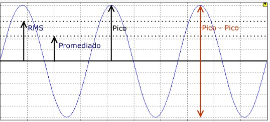
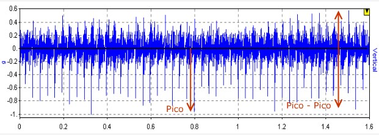
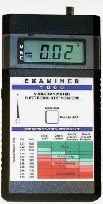
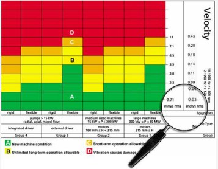
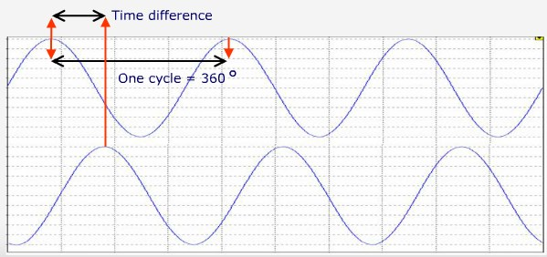
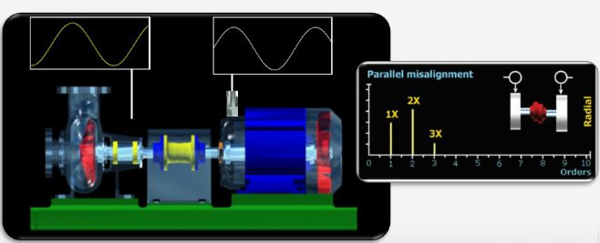
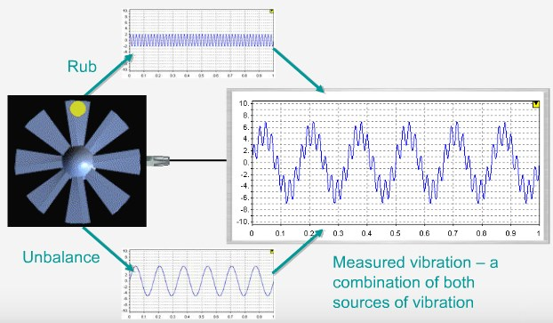
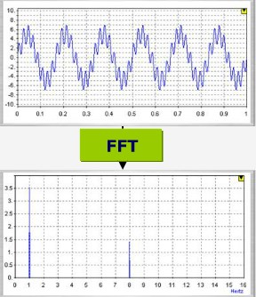
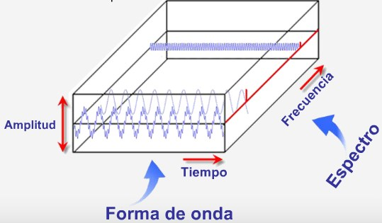

Objetivos
Objetivos
Objetivos
Objetivos
- Fundamentos del analisis vibracional.
- Como obtener buenas mediciones.
- Inicio del analisis Vibracional.
Fundamentos de Vibración
Fundamentos de Vibración
Vibración
Vibración
Cuando mides la vibración en los apoyos (cojinetes, rodamientos) de una máquina, estas midiendo la respuesta de la carcasa del apoyo a las fuerzas generadas en el interior de la máquina.
Aquellas fuerzas está vinculadas con todos los elementos rotativos de la maquina y de los alrededores.
Por tanto, es razonable pensar, que si mides la vibración y la analizas correctamente, puedes determinar si existe algun problema en la maquina
A medida que la maquina se degrada, el nivel de vibración y los patrones cambiarán. El nivel generalmente aumentará, y el patrón puede cambiar en multiples formas.
Ejemplo
Ejemplo
Imagina una moneda pegada a una de las palas de un ventilador (idealmente podemos considerar que el eje de rotación del ventilador coincide con el centro de masa).
Existe un desplazamiento ciclico que depende de la velocidad de rotación y del peso de esta moneda.1
La onda sinusoidal (con su frecuencia, periodo y amplitud) es una representación de la vibración a lo largo del tiempo.
Amplitud
Amplitud
La amplitud nos indica la severidad de la vibración. Esta amplitud puede medirse de diversas formas.

Terminos
Terminos
Amplitud pico a pico: fondo del valle a valor maximo que alcanza el pico.
Amplitud pico: cero a valor maxico del pico.
Amplitud promedio: valor promedio de la onda rectificada (valor absoluto)
Amplitud RMS: Valor eficaz.
Para señales sinusoidales:
- pk-pk = 2 * pk
- Promedio = 0.637* pk
- RMS = 0.707 * pk
Para señales reales:

Vibración global
Vibración global
Durante muchos años se han utilizado medidores portátiles que dan un valor de vibración global de la máquina. La lectura es de nivel global RMS o pico a pico.

Severidad de Vibración global
Severidad de Vibración global
Una tabla descrita en la norma ISO 10816-3 se usa para indicar el estado de la máquina en funcion a sus valores de amplitud.1

PERO
PERO
No existe un número "mágico", que puede ser usado de manera definitiva, para decidir el estado de la maquina. Desafortunadamente con estos valores es imposible sabér qué esta mal en la maquina. Es más una herramienta de detección que de analisis.
Estos parámetros se usan para dirigir tu atención sobre una máquina que pueda tener un problema.
Fase
Fase
La fase es una medida del tiempo entre dos eventos repetitivos de igual frecuencia expresado en grados sexagesimales.

Fase
Fase
Usamos la fase para diagnosticar fallos tales como desequilibrio (el caso del ventilador), desalineación, ejes doblados, y muchos otros problemas. Tambien se pueden detectar resonancias y problemas de flexibilida en la base.

Fundamento de analisis de Vibración
Fundamento de analisis de Vibración
Vibración compuesta
Vibración compuesta
En nuestro ejemplo, agregamos un defecto en la pared interna de la carcaza del ventilador. Podemos observar que la frecuencia con la que este defecto interactua con las palas del ventilador estara definido por el numero de palas y la velocidad del ventilador.1

La onda resultante es la suma de vibracion por desbalance y por el defecto en la pared interna.

La onda es muy útil, pero a medida que se van introduciendo un mayor número de señales, se hace más dificil interpretar qúe esta pasando en la máquina.1

Espectro
Espectro
Pero existe otra manera de estudiar la vibración, y consiste en estudiar el especto. El especto se deriva de la onda por medio de un proceso denaminado "Transformada Rápida de Fourier", o FFT

Espectro
Espectro
El proceso separa la onda temporal en sus partes constituyentes (ondas sinusoidales de diferente frecuencia y amplitud) para luego ser visualizados como picos a diferentes frecuencias.

Thank You ˊ・ω・ˋ